In this project, my team and I designed Lume, a mobile app that helps independent designers gain visibility in a saturated market. The project specifically addressed the challenge of showcasing their work effectively by providing curated explore pages, personalized recommendations, and seamless mood board creation, making it easier for designers to connect with a broader audience.
Independent designers struggle to gain visibility in a saturated market.
How can we help independent designers get noticed, manage their shops easily, and see their progress?
With curated explore pages and seamless mood board creation, Lume empowers independent designers through effortless and engaging brand visibility.
A solution bridging inspiration and purchase, Lume addresses limited discoverability and lack of organic engagement in independent fashion. Through explore, save, and share features, it fosters a community-driven fashion ecosystem.
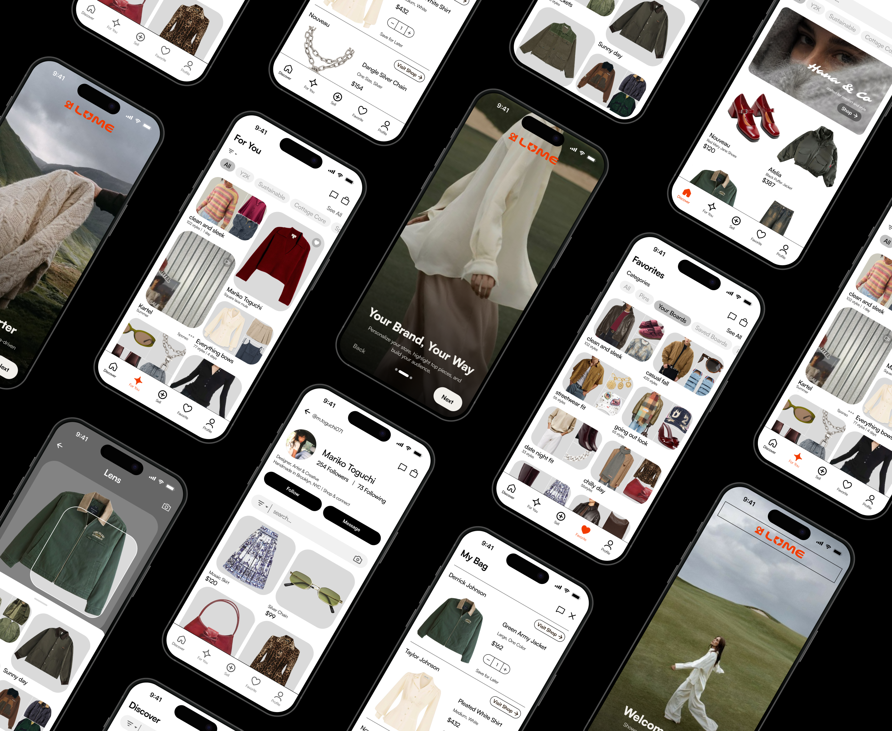
WHEN WAS THIS?
Jan - Feb 2025 (2 Weeks)
WHAT'D I DO?
As the User Researcher, UX/UI Designer, and UX Engineer on a team of 3, I conducted a comprehensive UX design process from research and ideation to high-fidelity prototypes and implementation.
My responsibilities included:
To better understand user frustrations, we conducted interviews with five independent designers at varying levels of brand establishment. Through affinity mapping, we analyzed and grouped their responses to identify common patterns and pain points. Here's what we found:
Visibility Struggles
Independent designers lack visibility without costly ads.
Pricing Challenges
Platform fees make competitive pricing and profits hard to sustain.
Operational Burdens
Order management and customer service drain time from creating.
Logistics Roadblocks
Shipping and production across sizes and variants are inefficient.
Introduce curated collections and personalized recommendations to boost organic reach.
Allow custom branding options for designers to differentiate their stores.
Offer inventory sync tools for real-time stock updates.
Partner with on-demand production & shipping services for streamlined logistics.
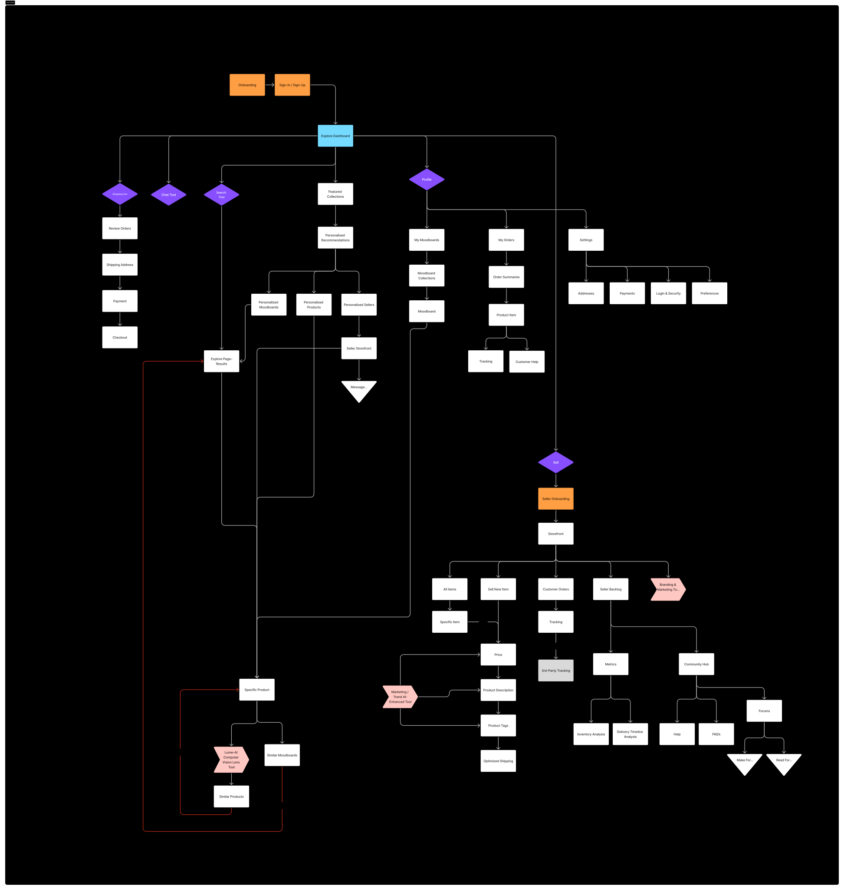
From our research, we developed low-fidelity wireframes to piece our solutions together. After a team critique, we then moved onto high-fidelity wireframes.
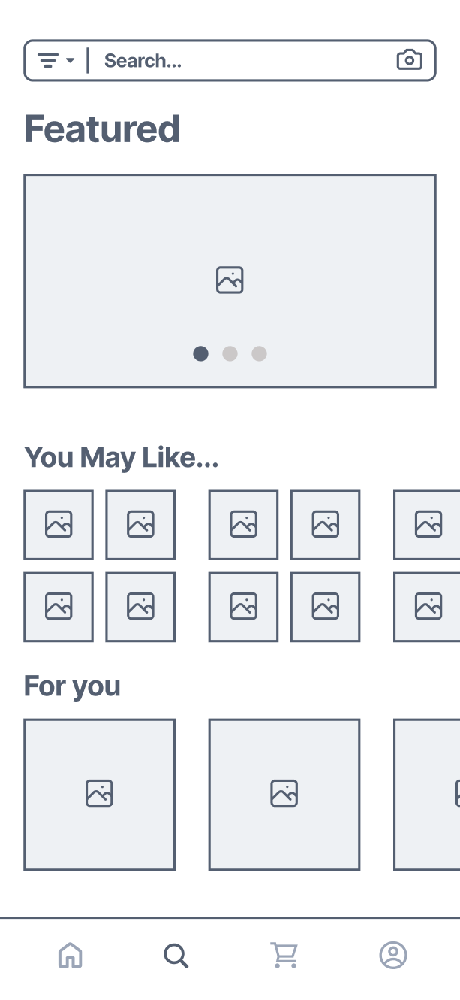
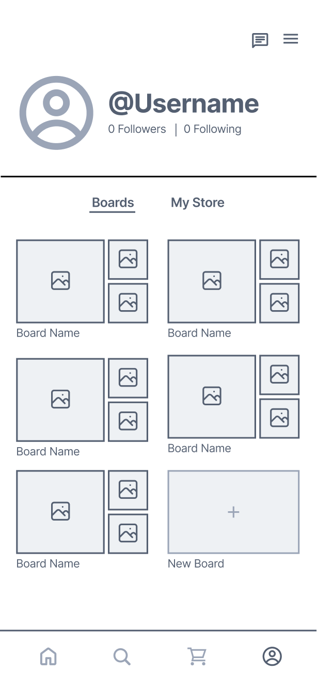
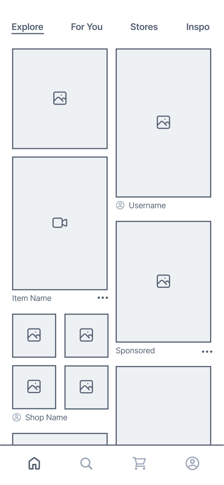
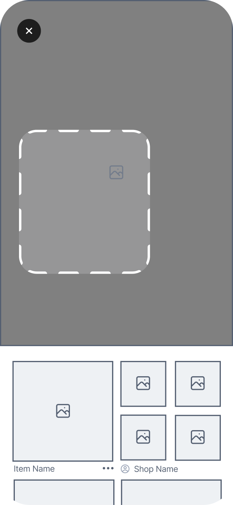
To ensure optimal readability and maintain a clean, modern aesthetic, we chose Satoshi as our primary typeface. The entire design follows a structured 4-column grid system with 20px margins and 10px gutters, creating a balanced and harmonious layout.
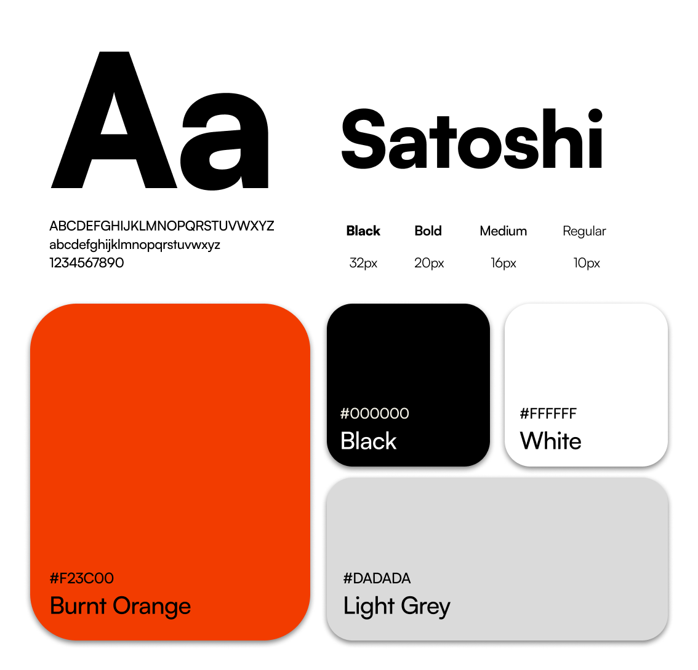
Streamlined onboarding process that helps users set up their profiles and preferences for a personalized experience.
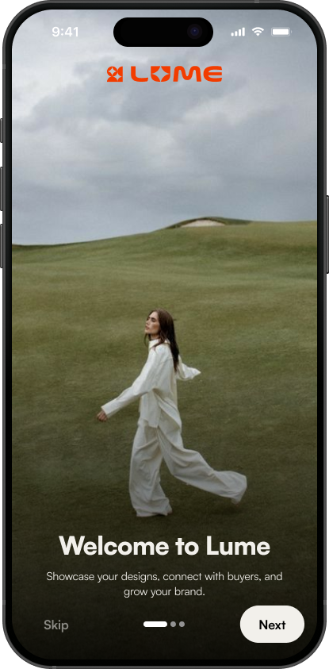
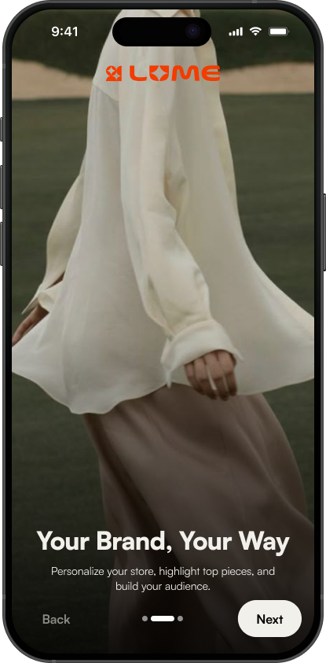
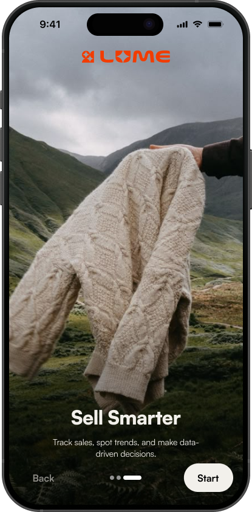
Curated explore pages with personalized recommendations to help users discover new designers and products.
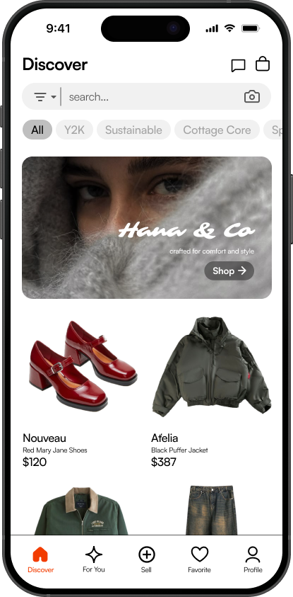
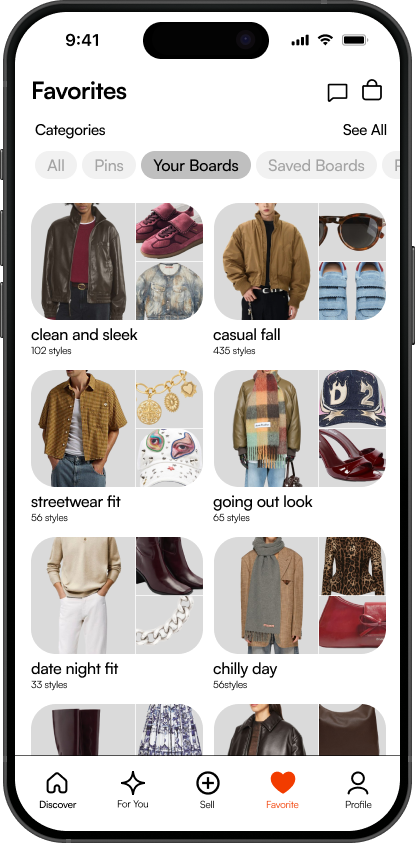
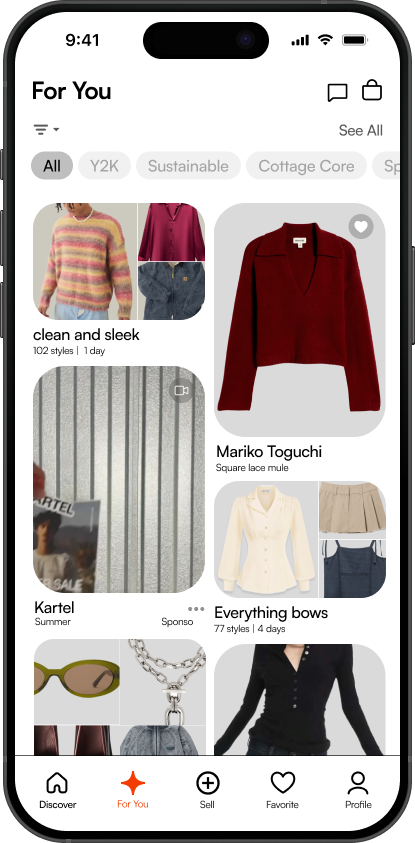
AI-powered visual search and recommendations for finding similar clothing, enabling effortless browsing and discovery of style-matched pieces.
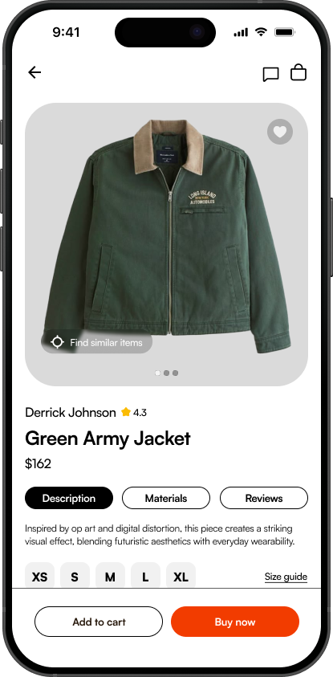
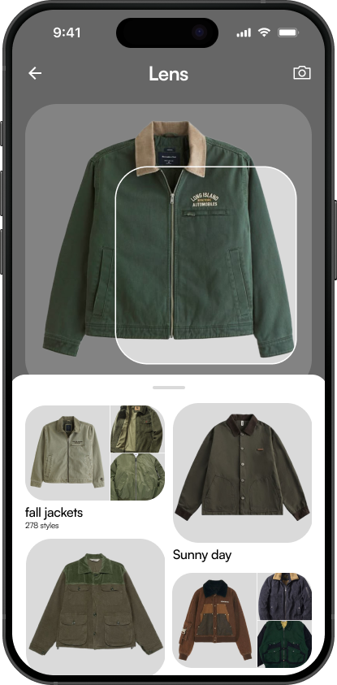
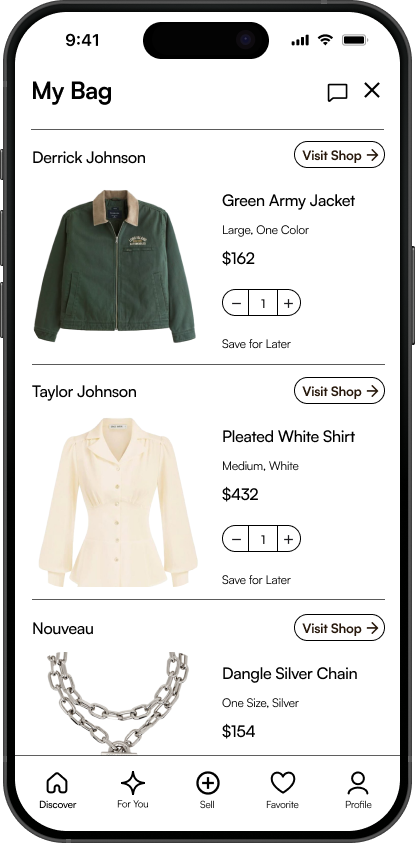
Comprehensive dashboard for designers to manage their store, track analytics, and engage with their audience.
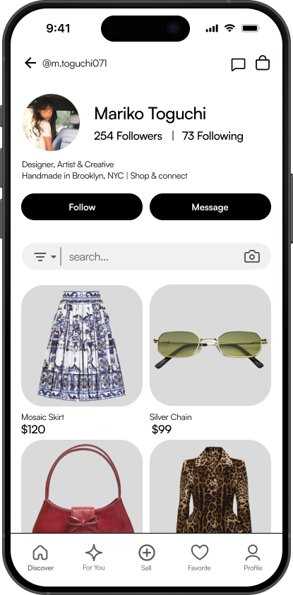
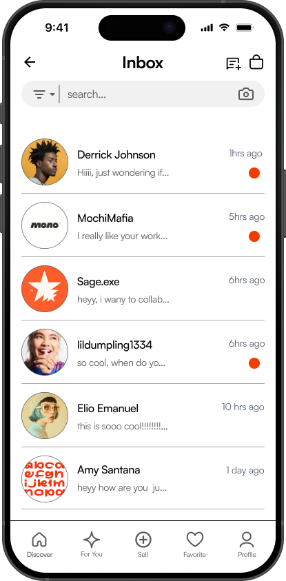
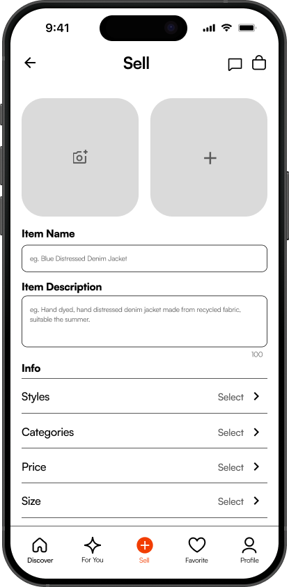
Below are video demonstrations showcasing the key features and user flows of Lume in action, including the personalized discovery experience, mood board creation, and AI integration.
While initially envisioned as a platform for all independent designers, we discovered that focusing specifically on fashion designers enabled more meaningful features and specialized tools for brand storytelling and inventory management.
Moving forward, we aim to enhance Lume with improved customization options, deeper analytics, and stronger community features including networking and mentorship programs. Through continuous iteration based on designer feedback, Lume will evolve beyond a selling platform into a thriving community where independent fashion brands can grow and connect.